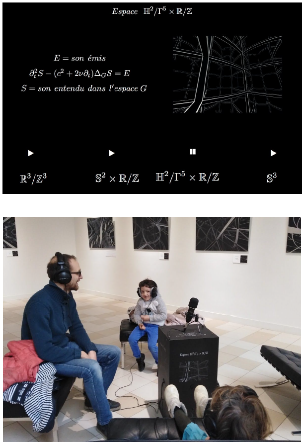

<div class='container'>
    <div id="works">
        <div class="row">
            <div class="col-9">
                <div class="content-container">
                    <h2>CONVERSATIONS DANS PLUSIEURS ESPACES</h2>
                    <p>avec <a href="http://www.skrako.com/" target="blank">Sergio Krakowski</a> et <a href="https://webusers.imj-prg.fr/~pierre.berger/" target="blank">Pierre Berger</a> - <a href="http://esthetopies.ihp.fr/" target="blank">Groupe de recherches Esthétopies</a></p>
                    <p>Microphone omnidireccional, écouteurs, acier imprimé</p>
                    <p>2016 - 2017</p>
                    <br>
                    <br>
                    
                    <br>
                    <br>
                    <p>
                        À tout espace (même abstrait) est associé des harmoniques de résonance, qui, si on arrive à les calculer, permettent de simuler son acoustique. <i>Conversations</i>  est une installation sonore interactive composée d'un micro omnidirectionnel qui capte les paroles des participants. Chacun d'entre eux entend le son restitué via des écouteurs qui diffusent la réverbération du son dans l'espace choisi. Ce dispositif crée une expérience ludique basée sur des mathématique fondamentales, essayant ainsi de réveiller la curiosité du public sur la relation entre son et géometrie.
                    </p>
                </div>
            </div>
        </div>
    </div>
</div>